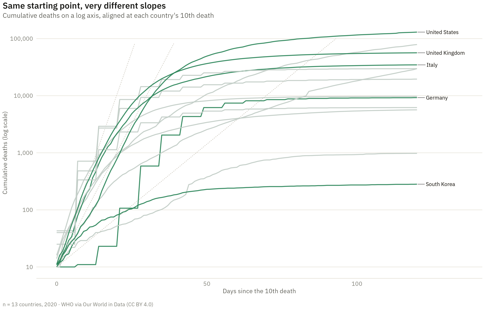

Show the R code
# The doubling guides: on a log axis constant doubling is a straight line, so
# these are the reference the eye actually measures slope against.
guides <- expand_grid(days = c(2, 3, 7), day = 0:120) |>
mutate(total_deaths = 10 * 2^(day / days),
label = paste0("doubles every ", days, " days")) |>
filter(total_deaths <= 1e5)
ends <- aligned |> slice_max(day, n = 1, by = country)
ggplot(aligned, aes(day, total_deaths, group = country)) +
geom_line(data = guides, aes(group = label), colour = "#c9c4b8",
linewidth = .35, linetype = "22") +
geom_line(aes(colour = country %in% focus), linewidth = .7, alpha = .9) +
ggrepel::geom_text_repel(data = filter(ends, country %in% focus),
aes(label = country), size = 2.8, hjust = 0,
family = dsvar_font(), seed = 2, direction = "y",
nudge_x = 3, segment.size = .2,
bg.color = "#faf8f4", bg.r = .12) +
scale_colour_manual(values = c(`TRUE` = dsvar_accent(), `FALSE` = "#c2cdc7"),
guide = "none") +
scale_y_log10(labels = scales::label_comma()) +
coord_cartesian(xlim = c(0, 135), ylim = c(10, 1e5)) +
labs(title = "Same starting point, very different slopes",
subtitle = "Cumulative deaths on a log axis, aligned at each country's 10th death",
x = "Days since the 10th death", y = "Cumulative deaths (log scale)",
caption = sprintf("n = %d countries, 2020 · WHO via Our World in Data (CC BY 4.0)",
length(unique(aligned$country))))